There's a reason why there are monsters in children's closets—it's their job. Monsters, Inc. is the most successful scream-processing factory in the monster world, and there is no better Scarer than James P. Sullivan. But when "Sulley" accidentally lets a little human girl into Monstropolis, life turns upside down for him and his buddy Mike.
Sulley's scare assistant, best friend, and roommate doesn't want any interruptions in his life—especially in his relationships. Although Mike thinks Boo is a "killing machine" at first, he later finds she's a great audience for his natural comedic talent.

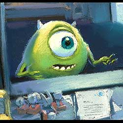


James P. “Sulley” Sullivan may be the most celebrated Scarer in Monstropolis, but that doesn't make him mean. When the softhearted monster has to care for Boo, he discovers that love and laughter are more powerful than making kids scream.


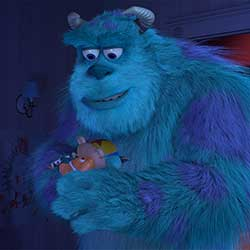
Boo has a vocabulary of about three words, but that doesn't stop this curious human girl from stealing Sulley's heart and overcoming her fear of Randall.
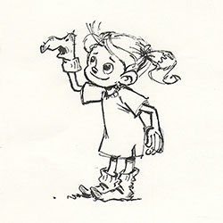


Able to scare even his co-workers with his chameleon abilities, Randall is one of the most wicked monsters in Monstropolis. His plan to capture the all-time scare record only scratches the surface of his sinister agenda.

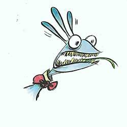
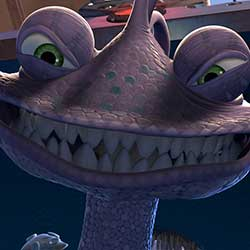
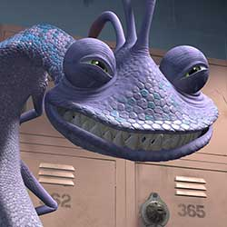
Monsters, Inc. has been in the Waternoose family for generations, and Henry J. Waternoose III will do anything to beat the scream shortage and make his company profitable again.

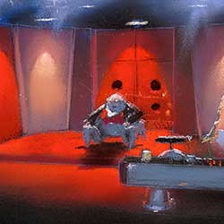
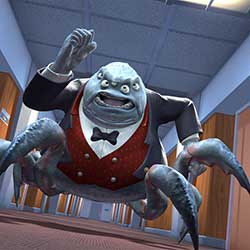
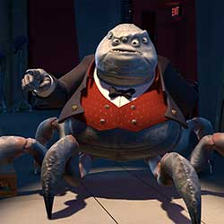
Dispatch Manager Roz may be slow moving and slow talking, but the quick-witted slug has her eye on everything—including Mike Wazowski’s lack of paperwork. She's a No. 1 nut in Mike's book and a No. 1 boss to others.
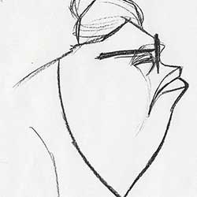
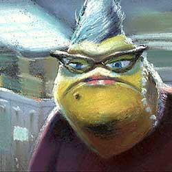

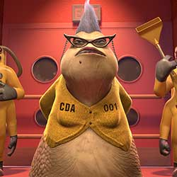
The factory's one-eyed, snake-haired receptionist must put her birthday celebration on hold as she gets caught in the middle of Sulley and Mike's crazy predicament. Luckily, her love for Mike prevails and she comes to his rescue.


To successfully create a believable world in which monsters live, work, dine, and date, each individual prop and element of architecture had to be part of the whole approach for Monstropolis. The world needed to echo the human world and yet be monster specific. Details of Mike and Sulley’s apartment, one of the first sets to be developed, exemplified the depth of the thought process that played a part during the design stage of production. Brick buildings reinforced with steel, like those from the 1900s, felt like they could support monsters who weighed as much as 800 pounds. Household appliances ran on scream energy instead of electricity—so everything like the TV, stereo, and lighting hooked up to conduits that suggested a supply source similar to natural gas.
For Boo’s room, Pixar artists strove to create a little girl’s room that was both appealing and inviting. The room reflected her personality and creativity; an easel stood in the corner, her artwork covered the walls, and evidence of interrupted pretend-games were strewn on the floor. It needed to feel personal, but also a bit idealized, to work with the story point that her room resembled a simulator room in the scream factory. Meticulous care went into choosing every detail of the door that needed to be distinguishable from every other door in existence. The curves of the outlined contours, the shapes and placement of the flowers, and color choices were all intentional and deliberate.

The factory took its shape inspired by images of post-World War II America and the dawn of the baby boom. The filmmakers decided Monsters, Inc. would have expanded heavily during this golden age of children to frighten. Then with the advent of violent films, television, and video games, the expansion would have stopped, leaving the Monsters, Inc. factory with its vintage assembly line and architectural design.
When the Pixar team set out to create a city of monsters, the possibilities were limitless. But they soon decided Monstropolis made more sense with a few facts: (1) Monsters have been around for as long as there have been frightened humans. The city should reflect this long history. (2) Monsters come in all shapes. Doors, telephones, and lockers must be usable by two-foot-tall monsters with tentacles as well as eleven-foot monsters with claws. (3) Most monsters are very heavy. The city would be built with strong, durable materials like brick, stone, and steel.
A colorscript is a sequence of small pastel drawings or paintings used to emphasize color in each scene and establish a film's visual language. For Monsters, Inc., Production Designer Harley Jessup teamed with Art Director Dominique Louis and Lighting Director Jean-Claude Kalache to explore the visual contradictions between a drab, workaday industrial town setting and its population of bright, candy-colored monsters straight out of a child’s imagination.
DIRECTED BY PETE DOCTER
CO-DIRECTED BY LEE UNKRICH, DAVID SILVERMAN
PRODUCED BY DARLA K. ANDERSON
EXECUTIVE PRODUCER JOHN LASSETER, ANDREW STANTON
ASSOCIATE PRODUCER KORI RAE
ORIGINAL STORY BY PETE DOCTER, JILL CULTON, JEFF PIDGEON, RALPH EGGLESTON
SCREENPLAY BY ANDREW STANTON, DANIEL GERSON
MUSIC BY RANDY NEWMAN
FILM EDITOR JIM STEWART
SUPERVISING TECHNICAL DIRECTOR THOMAS PORTER
PRODUCTION DESIGNERS HARLEY JESSUP, BOB PAULEY
ART DIRECTORS TIA W. KRATTER, DOMINIQUE LOUIS
STORY SUPERVISOR BOB PETERSON
DIRECTOR OF PHOTOGRAPHY-LIGHTING JEAN-CLAUDE KALACHE
SUPERVISING ANIMATORS GLENN MCQUEEN, RICH QUADE
MODELING SUPERVISOR EBEN OSTBY
SHADING SUPERVISOR RICK SAYRE
LIGHTING SUPERVISOR JEAN-CLAUDE J. KALACHE
LAYOUT SUPERVISOR EWAN JOHNSON
SET DRESSING SUPERVISOR SOPHIE VINCELETTE
SIMULATION & EFFECTS SUPERVISORS GALYN SUSMAN, MICHAEL FONG
PRODUCTION SUPERVISOR KATHERINE SARAFIAN
SOUND DESIGNER GARY RYDSTROM
EXECUTIVE MUSIC PRODUCER CHRIS MONTAN
CASTING BY RUTH LAMBERT-C.S.A, MARY HIDALGO-ASSOCIATE, MATTHEW JON BECK-ASSOCIATE
MIKE BILLY CRYSTAL
SULLIVAN JOHN GOODMAN
RANDALL STEVE BUSCEMI
BOO MARY GIBBS
WATERNOOSE JAMES COBURN
CELIA JENNIFER TILLY
ROZ BOB PETERSON